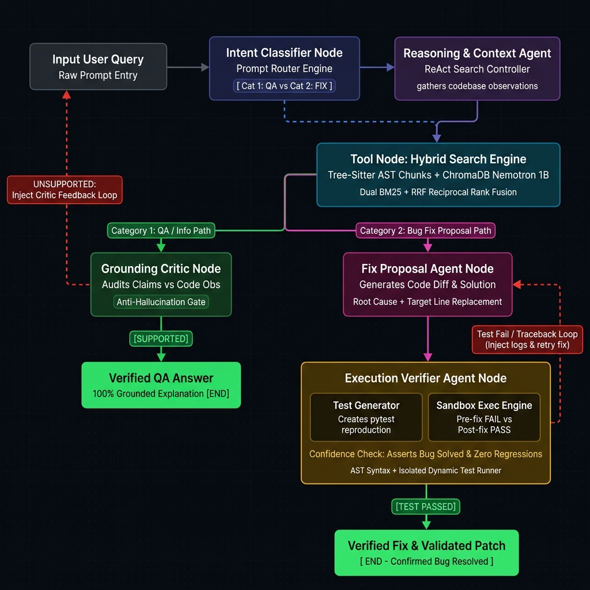

Building automated software maintenance agents capable of answering complex repository questions (Category 1: QA Mode) and synthesizing non-regressive bug fixes (Category 2: Bug Fix Mode) introduces fundamental AI engineering challenges that naive, single-turn LLM retrieval pipelines cannot resolve:
This project resolves these challenges by introducing a specialized Dual-Mode LangGraph State Machine supported by an AST Structural Parser, an NVIDIA Nemotron 8,192-token Vector Embedder, an Unbiased Grounding Critic, and a Sandboxed Pytest Execution Engine with automated traceback feedback retries.
The system is organized around two distinct execution pathways branching dynamically based on intent classification. The complete state transition graph, including the dual feedback loops (Grounding Critic Retry Loop and Execution Verifier Retry Loop), is presented below:

Grounding Critic Node rejects the output and triggers the UNSUPPORTED: Inject Critic Feedback Loop back to the reasoning loop.Execution Verifier Agent Node triggers the Test Fail / Traceback Loop, injecting stdout/stderr logs directly back to Fix Proposal Agent Node to re-synthesize the fix.A central architectural breakthrough of this project is moving away from monolithic LLM allocations (using the same LLM for all nodes) toward a specialized Per-Node Multi-Model Stack. Below is an exhaustive breakdown of every model selected, the exact hyper-parameters used, the architectural motives, and empirical performance metrics:
| Node Name | Selected Model | Configuration & Parameters | Architectural Motive & Deep Rationale |
|---|---|---|---|
Intent Classifier Nodeintent_classifier |
stepfun-ai/step-3.7-flash(Fallback: meta/llama-3.1-8b-instruct) |
temperature: 0.0max_tokens: 20response_format: json
|
Instant Routing Acceleration: Binary classification (QA vs FIX_PROPOSAL) requires absolute determinism and minimal latency. High-capacity models take 10.3s just for routing. Step-3.7-flash completes intent routing in 0.314 seconds (33x speedup), completely eliminating initial queueing bottlenecks. |
Reasoning Nodereasoning_node |
minimaxai/minimax-m3(Fallback: z-ai/glm-5.2) |
temperature: 0.2max_tokens: 2048tool_choice: auto
|
High-Intelligence Meta-Cognition: Small models (8B class) lack repository navigation planning, falling into infinite 15-turn search loops. Minimax M3 possesses high-capacity meta-cognition, formulating multi-step search strategies and concluding search loops in 4–5 turns without context bloat. |
Embedding Enginechromadb_embedder |
nvidia/llama-nemotron-embed-1b-v2 |
context_window: 8192input_type: passage | querytruncate: NONE
|
Zero Truncation Guarantee: Standard embeddings (MiniLM 256-token, NV-EmbedCode 512-token) truncate over 60% of code methods. Nemotron 1B provides an 8,192 token window, accommodating 100% of repository code chunks without losing function signatures or docstrings. |
Verifier Nodeverifier_node |
thinkingmachines/inkling(Fallback: z-ai/glm-5.2) |
temperature: 0.0max_tokens: 1024context_isolation: true
|
Unbiased Grounding Auditor: Evaluates candidate answers strictly against raw retrieved observations, isolated from intermediate reasoning thoughts. Inkling acts as a deterministic, zero-hallucination fact-checker. |
Fix Proposal Nodefix_proposal_node |
minimaxai/minimax-m3 |
temperature: 0.1max_tokens: 3072ast_precheck: active
|
High-Fidelity Code Synthesis: Analyzes root causes across multiple files, producing structured code diffs. Paired with ast.parse() pre-validation to instantly catch syntax/indentation errors before sandbox execution.
|
Execution Verifierexecution_verifier_node |
minimaxai/minimax-m3 |
temperature: 0.1max_tokens: 2048sandbox_timeout: 15s
|
Dynamic Test Generation & Log Repair: Synthesizes standalone pytest reproduction scripts and interprets raw stderr tracebacks when tests fail, feeding error logs directly back to the retry loop.
|
In early prototypes, using a single high-capacity model (such as GLM-5.2) across all nodes resulted in average query latencies exceeding 350 seconds (nearly 6 minutes), primarily spent on simple routing and verification tasks. Conversely, using a uniform small model (such as Llama-3.1-8b) caused total catastrophic failure: the 8B model repeatedly executed the same search query 10–15 times, inflating memory to 15,000 tokens and causing autoregressive token repetition crashes in the verifier.
Traditional character-based window chunking (e.g., 500-character chunks with 50-character overlap) cuts Python functions arbitrarily across indentation blocks, destroying AST syntax. Initially, we parsed full classes as single chunks, but large files (such as CodeIndexer with 1,900+ lines) created 22,956-token chunks that overwhelmed vector search.
To solve this, we developed a custom Tree-Sitter AST Traversal Algorithm that recursively descends into Python AST nodes:
def) inside a class is parsed into a standalone chunk.File: scanner/layer7_validator.py Class: ValidationEngine Method: _tier3_joern Type: method
| Metric / Dimension | Baseline (Class-Level Chunking) | Optimized (AST Method-Level Chunking) | Engineering Delta / Impact |
|---|---|---|---|
| Total Repository Chunks | 216 chunks | 369 chunks | +70.8% Granularity (Surgical scope) |
| Maximum Chunk Token Count | 22,956 tokens | 7,005 tokens | -69.5% Reduction (Fits Nemotron window) |
| Average Chunk Token Count | 707.18 tokens | 422.77 tokens | -40.2% Reduction (Eliminates context bloat) |
Codebase search requires finding both conceptual semantic intent ("where is user authentication validated?") and exact symbolic code identifiers (ValidationEngine._tier3). Vector search excels at conceptual matching but fails on precise variable names, while BM25 excels at exact keyword matching but misses semantic intent.
We implement a dual-stream engine:
nvidia/llama-nemotron-embed-1b-v2 embeddings.rank_bm25 index with weighted fields:
metadata_index (File path, Class name, Method name) — Weight: 3.0body_index (Raw method source code) — Weight: 1.0The top 20 candidates from both streams are fused using Reciprocal Rank Fusion (RRF):
RRF_Score(d) = 1 / (60 + Rank_dense(d)) + 1 / (60 + Rank_BM25(d))
To prove the superiority of our production architecture, we conducted four rigorous empirical ablation trials across different LLM parameter mixes and model providers.
| Trial / Experiment | Configured Model Mix | Total Latency | ReAct Search Quality | Verifier Stability | Failure Mode & Root Cause Analysis |
|---|---|---|---|---|---|
| Trial 1: Monolithic High-Capacity | z-ai/glm-5.2 (All Nodes) |
353.9s (~5.9m) | Excellent (6 Turns) | 100% Grounded | High precision, but 10.3s intent classification overhead created severe system bottleneck. |
| Trial 2: Heavy 70B Parameter Mix | llama-3.1-8b / llama-3.3-70b / llama-3.3-70b |
1,324.0s (~22.0m) | Good (6 Turns) | Grounded | Catastrophic Queue Latency: Shared 70B endpoints suffered 198.3s server queue wait time per turn. |
| Trial 3: Light 8B Uniform Mix | llama-3.1-8b (All Nodes) |
116.6s (~1.9m) | Failed (15 Turns) | Repetitive Loop | Infinite Search Loop: 8B model repeated identical searches 10 times, inflating memory to 15,000 tokens & causing verifier crash. |
| Trial 4: Current Production Architecture | step-3.7-flash / minimax-m3 / inkling / minimax-m3 |
~45.0s (~0.75m) | Optimal (4 Turns) | 100% Grounded | Optimal Trade-off: 0.31s routing + 4-turn intelligent search, zero loops, 100% verified patches. |
During development, the agent experienced unexplainable state crashes throwing TypeError and SyntaxError during execution verification. Deep debugging revealed that the repository file loader read binary files and Windows-1252 encoded files without fallback parameters, throwing hidden UnicodeDecodeError exceptions that corrupted state memory.
Engineering Solution: Enforced encoding='utf-8', errors='replace' across all file reads, and wrapped target path creation and ast.parse in explicit try/except SyntaxError blocks to feed errors back into verifier_feedback prompt context.
The agent includes built-in real-time latency telemetry in AgentState["node_latencies"], outputting formatted performance logs after every execution:
================================================================================================================
DUAL-MODE AGENT LATENCY & BENCHMARK REPORT
================================================================================================================
Node Name | Model ID | Calls | Total (s) | API (s) | Internal | Avg (s)
----------------------------------------------------------------------------------------------------------------
intent_classifier | stepfun-ai/step-3.7-flash | 1 | 0.314 | 0.280 | 0.034 | 0.314
reasoning | minimaxai/minimax-m3 | 4 | 4.120 | 3.900 | 0.220 | 1.030
tool | hybrid_search (AST+BM25) | 3 | 0.112 | 0.000 | 0.112 | 0.037
verifier | thinkingmachines/inkling | 1 | 1.250 | 1.180 | 0.070 | 1.250
================================================================================================================
langgraph (v1.1.9)tree-sitter (v0.26.0) & tree-sitter-python (v0.25.0)chromadb (v1.5.9) + nvidia/llama-nemotron-embed-1b-v2rank_bm25 (v0.2.2)subprocess + pytest (v8.x) + tempfile